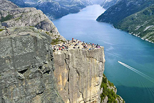
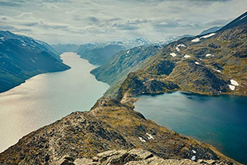

Fine turer
Preikestolen
Preikestolen ved Lysefjorden innenfor Stavanger er en av Norges store turistmagneter.
Flere hundre tusen mennesker tar turen ut på det svimlende fjellplatået hvert år.
Det er meget god sti fra til fjellhylla ved Preikestolen fjellstue.
Hvis man starter å gå fra preikestolen fjellstue:| Type | Lengde | Varighet | Gradering |
|---|---|---|---|
| Fottur, hyttetur, fjelltur | Ca. 4,0km | 2 timer 30 min | middels |
Det best besøkende attraksjonen
Preikestolen er en av Rogalands Best besøkte attraksjoner – og et av landets mest spektakulære fotomotiver.
I 2011 ble Preikestolen kåret til et av verdens mest spektakulære utsiktspunkter av både CNN og Lonely Planet.
Besseggen
Det er en grunn til at dette er en av landets mest populære turer.
Den fantastiske utsikten over ville Jotunheimen og bratte stier gir en god følelse av mestring.
Turen er ikke spesielt vanskelig, og heller ikke utsatt, men gir likevel en luftig følelse med det grønne Gjendevannet 400 meter lenger ned på den ene siden, og det dypblå Bessvatn på den andre.
Begge veier fra Gjendesheim turisthytte DNT og murubu turisthytte:| Type | Lengde | Varighet | Gradering |
|---|---|---|---|
| Fottur, hyttetur, topptur | Ca. 13,3km | 8 timer | Krevene |
50.000 besøkende hvert år
Besseggen er en av Norges mest kjente fjelltur med sine vel 50.000 besøkende hvert år. De fleste velger å ta båten fra Gjendesheim til Memurubu, for så å gå tilbake.
De tøffeste går fra Gjendesheim til Memurubu og tar båten tilbake eller overnatter på Memurubu.
Gaustatoppen
Gaustatoppen har Østlandets videste utsikt og er lett tilgjengelig fra veien mellom Rjukan og Tuddal.
Årlig bestiger over 30.000 mennesker fjellet. Fra parkeringsplassen ved Stavsro tar det knappe tre timer opp og to ned i vanlig tempo.
Høydeforskjellen er omtrent 700 meter, men stien opp er god og tydelig.
Hvis man starter i Tjønnset:| Type | Lengde | Varighet | Gradering |
|---|---|---|---|
| Fottur | Ca. 6,5km | 5 timer | Krevene |
Sør-norges videste utsikt
Toppen er lett tilgjengelig og enkel å bestige, men byr likevel på Sør-Norges videste utsikt.
Fra toppen kan du i klarvær se omtrent en sjettedel av Norge.